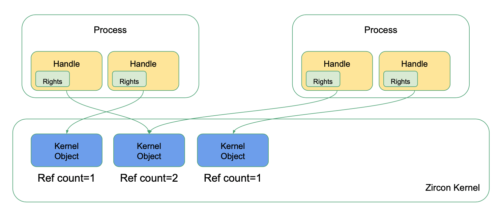

简明 zCore 教程
自己动手山寨操作系统：自顶向下方法
zCore 是用 Rust 语言重写的 Zircon 微内核，它是 Google 正在开发的 Fuchsia OS 中的底层内核。
本教程基于 zCore 的真实开发历史，还原其开发过程。带领读者一步一步用 Rust 实现自己的 Zircon 内核，最终能够运行原生的 shell 程序。 在此过程中我们将体会 Zircon 微内核的设计理念，感受如何用 Rust 语言以一种现代的方式编写系统软件，在项目中实现理论与实践的融合。
与传统操作系统开发不同的是，zCore 使用一种自顶向下的方法：首先基于宿主系统已有的功能，在用户态实现一个能够工作的 libOS，然后再逐步替换底层实现， "移植"回裸机环境中运行。因此我们更关注系统的整体设计，从高层视角看待 OS 如何为用户提供服务，而不纠结于底层硬件细节。
鉴于此，本教程假设读者了解操作系统基本概念和原理，具有常用的 Linux 系统使用经验，并且会使用 Rust 语言编写简单程序。 如果读者不熟悉操作系统和 Rust 语言，希望以自底向上方法从零构建操作系统，rCore Tutorial 可能是更好的选择。
如果你准备好了，让我们开始吧！
zCore 整体结构和设计模式
首先，从 Rust语言操作系统的设计与实现,王润基本科毕设论文,2019 和 zCore操作系统内核的设计与实现,潘庆霖本科毕设论文,2020 可以了解到从 rCore 的设计到 zCore 的设计过程的全貌。
zCore 的整体结构
zCore 的整体结构/项目设计图如下：

zCore的设计主要有两个出发点：
- 内核对象的封装：将内核对象代码封装为一个库，保证可重用
- 硬件接口的设计：使硬件与内核对象的设计相对独立，只向上提供统一、抽象的API接口
项目设计从上到下，上层更远离硬件，下层更接近硬件。
zCore 设计的顶层是上层操作系统，比如 zCore、rCore、Zircon LibOS 和 Linux LibOS。在项目架构中，各版本的操作系统有部分公用代码。与 zCore 微内核设计实现相关的部分则主要是图中左侧蓝色线部分。
第二层，是 ELF 程序加载层（ELF Program Loader），包括 zircon-loader 和 linux-loader，其中封装了初始化内核对象、部分硬件相关的初始化、设定系统调用接口、运行首个用户态程序等逻辑，并形成一个库函数。zCore 在顶层通过调用 zircon-loader 库中的初始化逻辑，进入第一个用户态程序执行。
第三层，是系统调用实现层（Syscall Implementation），包括 zircon-syscall 和 linux-syscall，这一层将所有的系统调用处理例程封装为一个系统调用库，供上方操作系统使用。
第四层，利用硬件抽象层提供的虚拟硬件 API 进行内核对象（Kernel Objects）的实现，并且基于实现的各类内核对象，实现第三层各个系统调用接口所需要的具体处理例程。
第五层，是硬件抽象层（HAL，Hardware Abstraction Layer），这里对应的是 kernel-hal 模块。kernel-hal 将向上提供所有操作硬件需要的接口，从而使得硬件环境对上层操作系统透明化。
第六层，是对直接操作硬件的代码进行一层封装，对应模块为 kernel-hal-bare 和 kernel-hal-unix。kernel-hal 系列库仅仅负责接口定义，即将底层硬件/宿主操作系统的操作翻译为上层操作系统可以使用的形式。在这里，kernel-hal-bare 负责翻译裸机的硬件功能，而 kernel-hal-unix 则负责翻译类 Unix 系统的系统调用。
最底层是底层运行环境，包括 Bare Metal（裸机），Linux / macOS 操作系统。Bare Metal可以认为是硬件架构上的寄存器等硬件接口。
zCore 内核组件
zCore 内核运行时组件层次概况如下：

在zCore启动过程中，会初始化物理页帧分配器、堆分配器、线程调度器等各个组成部分。并委托 zircon-loader 进行内核对象的初始化创建过程，然后进入用户态的启动过程开始执行。每当用户态触发系统调用进入内核态，系统调用处理例程将会通过已实现的内核对象的功能来对服务请求进行处理；而对应的内核对象的内部实现所需要的各种底层操作，则是通过 HAL 层接口由各个内核组件负责提供。
其中，VDSO（Virtual dynamic shared object）是一个映射到用户空间的 so 文件，可以在不陷入内核的情况下执行一些简单的系统调用。在设计中，所有中断都需要经过 VDSO 拦截进行处理，因此重写 VDSO 便可以实现自定义的对下层系统调用（syscall）的支持。Executor 是 zCore 中基于 Rust 的 async 机制的协程调度器。
在HAL接口层的设计上，还借助了 Rust 的能够指定函数链接过程的特性。即，在 kernel-hal 中规定了所有可供 zircon-object 库及 zircon-syscall 库调用的虚拟硬件接口，以函数 API 的形式给出，但是内部均为未实现状态，并设置函数为弱引用链接状态。在 kernel-hal-bare 中才给出裸机环境下的硬件接口具体实现，编译 zCore 项目时、链接的过程中将会替换/覆盖 kernel-hal 中未实现的同名接口，从而达到能够在编译时灵活选择 HAL 层的效果。
Fuchsia OS 和 Zircon 微内核
内核对象
Zircon 是一个基于内核对象的系统。系统的功能被划分到若干组内核对象中。
作为一切的开始，本章首先构造了一个内核对象框架，作为后面实现的基础。
然后我们实现第一个内核对象 —— Process，它是所有对象的容器，也是将来我们操作对象的入口点。
最后会实现一个稍微复杂但是极其重要的对象 Channel，它是进程间通信（IPC）的基础设施，也是传送对象的唯一管道。
初识内核对象
内核对象简介
在动手编写我们的代码之前，需要首先进行调研和学习，对目标对象有一个全面系统的了解。 而了解一个项目设计的最好方式就是阅读官方提供的手册和文档。
让我们先来阅读一下 Fuchsia 官方文档：内核对象。这个链接是社区翻译的中文版，已经有些年头了。如果读者能够科学上网，推荐直接阅读官方英文版。
通过阅读文档，我们了解到与内核对象相关的三个重要概念：对象（Object），句柄（Handle），权限（Rights）。它们在 Zircon 内核中的角色和关系如下图所示：

简单来说：
- Zircon是一个基于对象的内核，内核资源被抽象封装在不同的 对象 中。
- 用户程序通过 句柄 与内核交互。句柄是对某一对象的引用，并且附加了特定的 权限。
- 对象通过 引用计数 管理生命周期。对于大多数对象，当指向它的最后一个句柄关闭时，对象随之销毁，或进入无法挽回的最终状态。
此外在内核对象的文档中，还列举了一些常用对象。点击链接进去就能查看到这个对象的具体描述，在页面最下方还列举了与这个对象相关的全部系统调用。 进一步查看系统调用的 API 定义，以及它的行为描述，我们就能更深入地了解用户程序操作内核对象的一些细节：
-
创建：每一种内核对象都存在一个系统调用来创建它，例如
zx_channel_create。 创建对象时一般需要传入一个参数选项options，若创建成功则内核会将一个新句柄写入用户指定的内存中。 -
使用：获得对象句柄后可以通过若干系统调用对它进行操作，例如
zx_channel_write。 这类系统调用一般需要传入句柄handle作为第一个参数，内核首先对其进行检查，如果句柄非法或者对象类型与系统调用不匹配就会报错。 接下来内核会检查句柄的权限是否满足操作的要求，例如write操作一般要求句柄具有WRITE权限，如果权限不满足就会继续报错。 -
关闭：当用户程序不再使用对象时，会调用
zx_handle_close关闭句柄。当用户进程退出时，仍处于打开状态的句柄也都会自动关闭。
我们还发现，有一类 Object 系统调用是对所有内核对象都适用的。 这表明所有内核对象都有一些公共属性，例如 ID、名称等等。每一种内核对象也会有自己特有的属性。
其中一些 Object 系统调用和信号相关。Zircon 每个内核对象都附带有 32 个 信号（Signals），它们代表了不同类型的事件。 与传统 Unix 系统的信号不同，它不能异步地打断用户程序运行，而只能由用户程序主动地阻塞等待在某个对象的某些信号上面。 信号是 Zircon 内核中很重要的机制，不过这部分在前期不会涉及，我们留到第五章再具体实现。
以上我们了解了 Zircon 内核对象的相关概念和使用方式。接下来在这一节中，我们将用 Rust 实现内核对象的基本框架，以方便后续快速实现各种具体类型的内核对象。 从传统面向对象语言的视角看，我们只是在实现一个基类。但由于 Rust 语言模型的限制，这件事情需要用到一些特殊的技巧。
建立项目
首先我们需要安装 Rust 工具链。在 Linux 或 macOS 系统下，只需要用一个命令下载安装 rustup 即可：
$ curl https://sh.rustup.rs -sSf | sh
具体安装方法可以参考官方文档。
接下来我们用 cargo 创建一个 Rust 库项目：
$ cargo new --lib zcore
$ cd zcore
我们将在这个 crate 中实现所有的内核对象，以库（lib）而不是可执行文件（bin）的形式组织代码，后面我们会依赖单元测试保证代码的正确性。
由于我们会用到一些不稳定（unstable）的语言特性，需要使用 nightly 版本的工具链。在项目根目录下创建一个 rust-toolchain 文件，指明使用的工具链版本：
{{#include ../../code/ch01-01/rust-toolchain}}
这个程序库目前是在你的 Linux 或 macOS 上运行，但有朝一日它会成为一个真正的 OS 在裸机上运行。
为此我们需要移除对标准库的依赖，使其成为一个不依赖当前 OS 功能的库。在 lib.rs 的第一行添加声明：
// src/lib.rs
#![no_std]
extern crate alloc;
现在我们可以尝试运行一下自带的单元测试，编译器可能会自动下载并安装工具链：
$ cargo test
Finished test [unoptimized + debuginfo] target(s) in 0.52s
Running target/debug/deps/zcore-dc6d43637bc5df7a
running 1 test
test tests::it_works ... ok
test result: ok. 1 passed; 0 failed; 0 ignored; 0 measured; 0 filtered out
实现 KernelObject 接口
所有的内核对象有一系列共同的属性和方法，我们称这些方法为对象的公共接口（Interface）。 同一种方法在不同类型的对象中可能会有不同的行为，在面向对象语言中我们称其为多态（Polymorphism）。
Rust 是一门部分面向对象的语言，我们通常用它的 trait 实现接口和多态。
首先创建一个 KernelObject trait 作为内核对象的公共接口：
use alloc::string::String;
// src/object/mod.rs
/// 内核对象公共接口
pub trait KernelObject: Send + Sync {
/// 获取对象 ID
fn id(&self) -> KoID;
/// 获取对象类型名
fn type_name(&self) -> &str;
/// 获取对象名称
fn name(&self) -> String;
/// 设置对象名称
fn set_name(&self, name: &str);
}
/// 对象 ID 类型
pub type KoID = u64;
这里的 Send + Sync 是一个约束所有 KernelObject 都要满足的前提条件，即它必须是一个并发对象。
所谓并发对象指的是可以安全地被多线程共享访问。事实上我们的内核本身就是一个共享地址空间的多线程程序，在裸机上每个 CPU 核都可以被视为一个并发执行的线程。
由于内核对象可能被多个线程同时访问，因此它必须是并发对象。
实现一个空对象
接下来我们实现一个最简单的空对象 DummyObject，并为它实现 KernelObject 接口：
// src/object/object.rs
use spin::Mutex;
/// 空对象
#[derive(Debug)]
pub struct DummyObject {
id: KoID,
inner: Mutex<DummyObjectInner>,
}
/// `DummyObject` 的内部可变部分
#[derive(Default, Debug)]
struct DummyObjectInner {
name: String,
}
这里我们采用一种内部可变性的设计模式：将对象的所有可变的部分封装到一个内部对象 DummyObjectInner 中，并在原对象中用自旋锁 Mutex 把它包起来，剩下的其它字段都是不可变的。
Mutex 会用最简单的方式帮我们处理好并发访问问题：如果有其他人正在访问，我就在这里死等。
数据被 Mutex 包起来之后需要首先使用 lock() 拿到锁之后才能访问。此时并发访问已经安全，因此被包起来的结构自动具有了 Send + Sync 特性。
使用自旋锁引入了新的依赖库 spin ，需要在 Cargo.toml 中加入以下声明：
[dependencies]
spin = "0.7"
然后我们为新对象实现构造函数：
// src/object/object.rs
use alloc::sync::Arc;
use core::sync::atomic::*;
impl DummyObject {
/// 创建一个新 `DummyObject`
pub fn new() -> Arc<Self> {
Arc::new(DummyObject {
id: Self::new_koid(),
inner: Default::default(),
})
}
/// 生成一个唯一的 ID
fn new_koid() -> KoID {
static NEXT_KOID: AtomicU64 = AtomicU64::new(1024);
NEXT_KOID.fetch_add(1, Ordering::SeqCst)
}
}
根据文档描述，每个内核对象都有唯一的 ID。为此我们需要实现一个全局的 ID 分配方法。这里采用的方法是用一个静态变量存放下一个待分配 ID 值，每次分配就原子地 +1。
ID 类型使用 u64，保证了数值空间足够大，在有生之年都不用担心溢出问题。在 Zircon 中 ID 从 1024 开始分配，1024 以下保留作内核内部使用。
另外注意这里 new 函数返回类型不是 Self 而是 Arc<Self>，这是为了以后方便而做的统一约定。
最后我们为它实现 KernelObject 接口：
// src/object/object.rs
impl KernelObject for DummyObject {
fn id(&self) -> KoID {
self.id
}
fn type_name(&self) -> &str {
"DummyObject"
}
fn name(&self) -> String {
self.inner.lock().name.clone()
}
fn set_name(&self, name: &str) {
self.inner.lock().name = String::from(name);
}
}
到此为止，我们已经迈出了万里长征第一步，实现了一个最简单的功能。有实现，就要有测试！即使最简单的代码也要保证它的行为符合我们预期。 只有对现有代码进行充分测试，在未来做添加和修改的时候，我们才有信心不会把事情搞砸。俗话讲"万丈高楼平地起"，把地基打好才能盖摩天大楼。
为了证明上面代码的正确性，我们写一个简单的单元测试，替换掉自带的 it_works 函数：
// src/object/object.rs
#[cfg(test)]
mod tests {
use super::*;
#[test]
fn dummy_object() {
let o1 = DummyObject::new();
let o2 = DummyObject::new();
assert_ne!(o1.id(), o2.id());
assert_eq!(o1.type_name(), "DummyObject");
assert_eq!(o1.name(), "");
o1.set_name("object1");
assert_eq!(o1.name(), "object1");
}
}
$ cargo test
Finished test [unoptimized + debuginfo] target(s) in 0.53s
Running target/debug/deps/zcore-ae1be84852989b13
running 1 test
test tests::dummy_object ... ok
大功告成！让我们用 cargo fmt 命令格式化一下代码，然后记得 git commit 及时保存进展。
实现接口到具体类型的向下转换
在系统调用中，用户进程会传入一个内核对象的句柄，然后内核会根据系统调用的类型，尝试将其转换成特定类型的对象。
于是这里产生了一个很重要的需求：将接口 Arc<dyn KernelObject> 转换成具体类型的结构 Arc<T> where T: KernelObject。
这种操作在面向对象语言中称为向下转换（downcast）。
在大部分编程语言中，向下转换都是一件非常轻松的事情。例如在 C/C++ 中，我们可以这样写：
struct KernelObject {...};
struct DummyObject: KernelObject {...};
KernelObject *base = ...;
// C 风格：强制类型转换
DummyObject *dummy = (DummyObject*)(base);
// C++ 风格：动态类型转换
DummyObject *dummy = dynamic_cast<DummyObject*>(base);
但在 Rust 中，由于其 trait 模型的限制，向下转换并不是一件容易的事情。
虽然标准库中提供了 Any trait，部分实现了动态类型的功能，但实际操作起来却困难重重。
不信邪的同学可以自己折腾一下：
use std::any::Any; use std::sync::Arc; fn main() {} trait KernelObject: Any + Send + Sync {} fn downcast_v1<T: KernelObject>(object: Arc<dyn KernelObject>) -> Arc<T> { object.downcast::<T>().unwrap() } fn downcast_v2<T: KernelObject>(object: Arc<dyn KernelObject>) -> Arc<T> { let object: Arc<dyn Any + Send + Sync + 'static> = object; object.downcast::<T>().unwrap() }
当然这个问题也困扰了 Rust 社区中的很多人。目前已经有人提出了一套不错的解决方案，就是我们接下来要引入的 downcast-rs 库：
[dependencies]
downcast-rs = { version = "1.2.0", default-features = false }
（题外话：这个库原来是不支持 no_std 的，zCore 有这个需求，于是就顺便帮他实现了一把）
按照它文档的描述，我们要为自己的接口实现向下转换，只需以下修改：
// src/object/mod.rs
use core::fmt::Debug;
use downcast_rs::{impl_downcast, DowncastSync};
pub trait KernelObject: DowncastSync + Debug {...}
impl_downcast!(sync KernelObject);
其中 DowncastSync 代替了原来的 Send + Sync，Debug 用于出错时输出调试信息。
impl_downcast! 宏用来帮我们自动生成转换函数，然后就可以用 downcast_arc 来对 Arc 做向下转换了。我们直接来测试一把：
// src/object/object.rs
#[test]
fn downcast() {
let dummy = DummyObject::new();
let object: Arc<dyn KernelObject> = dummy;
let _result: Arc<DummyObject> = object.downcast_arc::<DummyObject>().unwrap();
}
$ cargo test
Finished test [unoptimized + debuginfo] target(s) in 0.47s
Running target/debug/deps/zcore-ae1be84852989b13
running 2 tests
test object::downcast ... ok
test object::tests::dummy_object ... ok
模拟继承：用宏自动生成接口实现代码
上面我们已经完整实现了一个内核对象，代码看起来很简洁。但当我们要实现更多对象的时候，就会发现一个问题： 这些对象拥有一些公共属性，接口方法也有共同的实现。 在传统 OOP 语言中，我们通常使用 继承（inheritance） 来复用这些公共代码：子类 B 可以继承父类 A，然后自动拥有父类的所有字段和方法。
继承是一个很强大的功能，但在长期实践中人们也逐渐发现了它的弊端。有兴趣的读者可以看一看知乎上的探讨：面向对象编程的弊端是什么？。
经典著作《设计模式》中就鼓励大家使用组合代替继承。而一些现代的编程语言，如 Go 和 Rust，甚至直接抛弃了继承。在 Rust 中，通常使用组合结构和 Deref trait 来部分模拟继承。
继承野蛮，trait 文明。 —— 某 Rust 爱好者
接下来我们模仿 downcast-rs 库的做法，使用一种基于宏的代码生成方案，来实现 KernelObject 的继承。
当然这只是抛砖引玉，如果读者自己实现了，或者了解到社区中有更好的解决方案，也欢迎指出。
具体做法是这样的：
- 使用一个 struct 来提供所有的公共属性和方法，作为所有子类的第一个成员。
- 为子类实现 trait 接口，所有方法直接委托给内部 struct 完成。这部分使用宏来自动生成模板代码。
而所谓的内部 struct，其实就是我们上面实现的 DummyObject。为了更好地体现它的功能，我们给他改个名叫 KObjectBase：
// src/object/mod.rs
/// 内核对象核心结构
pub struct KObjectBase {
/// 对象 ID
pub id: KoID,
inner: Mutex<KObjectBaseInner>,
}
/// `KObjectBase` 的内部可变部分
#[derive(Default)]
struct KObjectBaseInner {
name: String,
}
接下来我们把它的构造函数改为实现 Default trait，并且公共属性和方法都指定为 pub：
// src/object/mod.rs
impl Default for KObjectBase {
/// 创建一个新 `KObjectBase`
fn default() -> Self {
KObjectBase {
id: Self::new_koid(),
inner: Default::default(),
}
}
}
impl KObjectBase {
/// 生成一个唯一的 ID
fn new_koid() -> KoID {...}
/// 获取对象名称
pub fn name(&self) -> String {...}
/// 设置对象名称
pub fn set_name(&self, name: &str) {...}
}
最后来写一个魔法的宏！
// src/object/mod.rs
/// 为内核对象 struct 自动实现 `KernelObject` trait 的宏。
#[macro_export] // 导出宏，可在 crate 外部使用
macro_rules! impl_kobject {
// 匹配类型名，并可以提供函数覆盖默认实现
($class:ident $( $fn:tt )*) => {
// 为对象实现 KernelObject trait，方法直接转发到内部 struct
impl KernelObject for $class {
fn id(&self) -> KoID {
// 直接访问内部的 pub 属性
self.base.id
}
fn type_name(&self) -> &str {
// 用 stringify! 宏将输入转成字符串
stringify!($class)
}
// 注意宏里面的类型要写完整路径，例如：alloc::string::String
fn name(&self) -> alloc::string::String {
self.base.name()
}
fn set_name(&self, name: &str){
// 直接访问内部的 pub 方法
self.base.set_name(name)
}
// 可以传入任意数量的函数，覆盖 trait 的默认实现
$( $fn )*
}
// 为对象实现 Debug trait
impl core::fmt::Debug for $class {
fn fmt(
&self,
f: &mut core::fmt::Formatter<'_>,
) -> core::result::Result<(), core::fmt::Error> {
// 输出对象类型、ID 和名称
f.debug_tuple(&stringify!($class))
.field(&self.id())
.field(&self.name())
.finish()
}
}
};
}
轮子已经造好了！让我们看看如何用它方便地实现一个内核对象，仍以 DummyObject 为例：
// src/object/mod.rs
/// 空对象
pub struct DummyObject {
// 其中必须包含一个名为 `base` 的 `KObjectBase`
base: KObjectBase,
}
// 使用刚才的宏，声明其为内核对象，自动生成必要的代码
impl_kobject!(DummyObject);
impl DummyObject {
/// 创建一个新 `DummyObject`
pub fn new() -> Arc<Self> {
Arc::new(DummyObject {
base: KObjectBase::default(),
})
}
}
是不是方便了很多？最后按照惯例，用单元测试检验实现的正确性：
// src/object/mod.rs
#[test]
fn impl_kobject() {
use alloc::format;
let dummy = DummyObject::new();
let object: Arc<dyn KernelObject> = dummy;
assert_eq!(object.type_name(), "DummyObject");
assert_eq!(object.name(), "");
object.set_name("dummy");
assert_eq!(object.name(), "dummy");
assert_eq!(
format!("{:?}", object),
format!("DummyObject({}, \"dummy\")", object.id())
);
let _result: Arc<DummyObject> = object.downcast_arc::<DummyObject>().unwrap();
}
有兴趣的读者可以继续探索使用功能更强大的 过程宏（proc_macro），进一步简化实现新内核对象所需的模板代码。 如果能把上面的代码块缩小成下面这两行，就更加完美了：
#[KernelObject]
pub struct DummyObject;
总结
在这一节中我们用 Rust 语言实现了 Zircon 最核心的内核对象概念。在此过程中涉及到 Rust 的一系列语言特性和设计模式：
- 使用 trait 实现接口
- 使用 内部可变性 模式实现并发对象
- 基于社区解决方案实现 trait 到 struct 的 向下转换
- 使用组合模拟继承，并使用 宏 实现模板代码的自动生成
由于 Rust 独特的面向对象编程特性，我们在实现内核对象的过程中遇到了一定的挑战。 不过万事开头难，解决这些问题为整个项目打下了坚实基础，后面实现新的内核对象就会变得简单很多。
在下一节中，我们将介绍内核对象相关的另外两个概念：句柄和权限，并实现内核对象的存储和访问。
对象管理器：Process 对象
句柄和权限
介绍并实现 Handle，Rights
在 Cargo.toml 中加入 bitflags 库：
[dependencies]
bitflags = "1.2"
在 object 模块下定义两个子模块：
// src/object/mod.rs
mod handle;
mod rights;
pub use self::handle::*;
pub use self::rights::*;
定义权限：
// src/object/rights.rs
use bitflags::bitflags;
bitflags! {
/// 句柄权限
pub struct Rights: u32 {
const DUPLICATE = 1 << 0;
const TRANSFER = 1 << 1;
const READ = 1 << 2;
const WRITE = 1 << 3;
const EXECUTE = 1 << 4;
const MAP = 1 << 5;
const GET_PROPERTY = 1 << 6;
const SET_PROPERTY = 1 << 7;
const ENUMERATE = 1 << 8;
const DESTROY = 1 << 9;
const SET_POLICY = 1 << 10;
const GET_POLICY = 1 << 11;
const SIGNAL = 1 << 12;
const SIGNAL_PEER = 1 << 13;
const WAIT = 1 << 14;
const INSPECT = 1 << 15;
const MANAGE_JOB = 1 << 16;
const MANAGE_PROCESS = 1 << 17;
const MANAGE_THREAD = 1 << 18;
const APPLY_PROFILE = 1 << 19;
const SAME_RIGHTS = 1 << 31;
const BASIC = Self::TRANSFER.bits | Self::DUPLICATE.bits | Self::WAIT.bits | Self::INSPECT.bits;
const IO = Self::READ.bits | Self::WRITE.bits;
const DEFAULT_CHANNEL = Self::BASIC.bits & !Self::DUPLICATE.bits | Self::IO.bits | Self::SIGNAL.bits | Self::SIGNAL_PEER.bits;
}
}
定义句柄：
// src/object/handle.rs
use super::{KernelObject, Rights};
use alloc::sync::Arc;
/// 内核对象句柄
#[derive(Clone)]
pub struct Handle {
pub object: Arc<dyn KernelObject>,
pub rights: Rights,
}
impl Handle {
/// 创建一个新句柄
pub fn new(object: Arc<dyn KernelObject>, rights: Rights) -> Self {
Handle { object, rights }
}
}
存储内核对象句柄
添加成员变量 handles: BTreeMap<HandleValue, Handle>
实现 create，add_handle，remove_handle 函数
使用上一节的方法，实现一个空的 Process 对象：
// src/task/process.rs
/// 进程对象
pub struct Process {
base: KObjectBase,
inner: Mutex<ProcessInner>,
}
impl_kobject!(Process);
struct ProcessInner {
handles: BTreeMap<HandleValue, Handle>,
}
pub type HandleValue = u32;
impl Process {
/// 创建一个新的进程对象
pub fn new() -> Arc<Self> {
Arc::new(Process {
base: KObjectBase::default(),
inner: Mutex::new(ProcessInner {
handles: BTreeMap::default(),
}),
})
}
}
插入、删除句柄函数：
// src/task/process.rs
impl Process {
/// 添加一个新的对象句柄
pub fn add_handle(&self, handle: Handle) -> HandleValue {
let mut inner = self.inner.lock();
let value = (0 as HandleValue..)
.find(|idx| !inner.handles.contains_key(idx))
.unwrap();
inner.handles.insert(value, handle);
value
}
/// 删除一个对象句柄
pub fn remove_handle(&self, handle_value: HandleValue) {
self.inner.lock().handles.remove(&handle_value);
}
}
定义内核错误及 Result 类型
// src/error.rs
/// Zircon statuses are signed 32 bit integers. The space of values is
/// divided as follows:
/// - The zero value is for the OK status.
/// - Negative values are defined by the system, in this file.
/// - Positive values are reserved for protocol-specific error values,
/// and will never be defined by the system.
#[allow(non_camel_case_types, dead_code)]
#[repr(i32)]
#[derive(Debug, Clone, Copy)]
pub enum ZxError {
OK = 0,
// ======= Internal failures =======
/// The system encountered an otherwise unspecified error
/// while performing the operation.
INTERNAL = -1,
/// The operation is not implemented, supported,
/// or enabled.
NOT_SUPPORTED = -2,
// ......
/// Connection was aborted.
CONNECTION_ABORTED = -76,
}
// src/error.rs
///
pub type ZxResult<T> = Result<T, ZxError>;
根据句柄查找内核对象
实现 get_object_with_rights 等其它相关函数
实现 handle 单元测试
// src/task/process.rs
impl Process {
/// 根据句柄值查找内核对象，并检查权限
pub fn get_object_with_rights<T: KernelObject>(
&self,
handle_value: HandleValue,
desired_rights: Rights,
) -> ZxResult<Arc<T>> {
let handle = self
.inner
.lock()
.handles
.get(&handle_value)
.ok_or(ZxError::BAD_HANDLE)?
.clone();
// check type before rights
let object = handle
.object
.downcast_arc::<T>()
.map_err(|_| ZxError::WRONG_TYPE)?;
if !handle.rights.contains(desired_rights) {
return Err(ZxError::ACCESS_DENIED);
}
Ok(object)
}
}
对象传送器：Channel 对象
创建一对内核对象
实现 Channel::create
讲一下互相持有对方 Weak 指针的目的，这里有不可避免的 unsafe
实现数据传输
实现 read, write 函数，read_write 单元测试
任务管理
本章我们来实现第一类内核对象：任务管理（Tasks）。
任务对象主要包括：线程 Thread，进程 Process，作业 Job。以及一些辅助性的对象，例如负责暂停任务执行的 SuspendToken 和负责处理异常的 Exception。
为了能够真实表现线程对象的行为，我们使用 Rust async 运行时 async_std 中的用户态协程来模拟内核线程。
这样就可以在用户态的单元测试中检验实现的正确性。
考虑到未来这个 OS 会跑在裸机环境中，将会有不同的内核线程的实现，我们创建一个特殊的硬件抽象层（Hardware Abstraction Layer，HAL），来屏蔽底层平台的差异，对上提供一个统一的接口。
这个 HAL 的接口未来会根据需要进行扩充。
本章中我们只会实现运行一个程序所必需的最小功能子集，剩下的部分则留到跑起用户程序之后再按需实现。
Zircon 任务管理体系
进程管理：Process 与 Job 对象
Process 与 Job
介绍 Process 与 Job 的整体设计
实现 Process 和 Job 对象的基本框架，支持树状结构
Job Policy 策略
实现 JobPolicy
线程管理：Thread 对象
线程状态
状态转移：创建 -> 运行 -> 暂停 -> 退出，最好有个状态机的图
实现 ThreadState，最好能加一个单元测试来验证转移过程
线程寄存器上下文
定义 ThreadState，实现 read_state，write_state
Async 运行时和 HAL 硬件抽象层
简单介绍 async-std 的异步机制
介绍 HAL 的实现方法：弱链接
实现 hal_thread_spawn
线程启动
将 HAL 接入 Thread::start，编写单元测试验证能启动多线程
内存管理
Zircon 内存管理模型
物理内存：VMO 对象
VMO 简介
根据文档梳理 VMO 的主要特性
实现 VMO 对象框架
实现 VmObject 结构，其中定义 VmObjectTrait 接口，并提供三个具体实现 Paged, Physical, Slice
HAL：用文件模拟物理内存
初步介绍 mmap，引出用文件模拟物理内存的思想
创建文件并用 mmap 线性映射到进程地址空间
实现 pmem_read, pmem_write
实现物理内存 VMO
用 HAL 实现 VmObjectPhysical 的方法，并做单元测试
实现切片 VMO
实现 VmObjectSlice，并做单元测试
物理内存：按页分配的 VMO
简介
说明一下：Zircon 的官方实现中为了高效支持写时复制，使用了复杂精巧的树状数据结构，但它同时也引入了复杂性和各种 Bug。 我们在这里只实现一个简单版本，完整实现留给读者自行探索。
介绍 commit 操作的意义和作用
HAL：物理内存管理
在 HAL 中实现 PhysFrame 和最简单的分配器
辅助结构：BlockRange 迭代器
实现 BlockRange
实现按页分配的 VMO
实现 for_each_page, commit, read, write 函数
VMO 复制
实现 create_child 函数
虚拟内存：VMAR 对象
VMAR 简介
实现 VMAR 对象框架
定义 VmAddressRange，VmMapping
实现 create_child, map, unmap, destroy 函数，并做单元测试验证地址空间分配
HAL：用 mmap 模拟页表
实现页表接口 map, unmap, protect
实现内存映射
用 HAL 实现上面 VMAR 留空的部分，并做单元测试验证内存映射
用户程序
Zircon 用户程序
用户态启动流程
kernel -> userboot -> bootsvc -> component_manager -> sh / device_manager
ZBI 与 bootfs：ZBI 中包含初始文件系统 bootfs，内核将 ZBI 完整传递给 userboot，由它负责解析并对其它进程提供文件服务
用户程序的组成
内核不直接参与用户程序的加载工作（第一个进程除外）
用户程序强制使用 PIC 和 PIE（位置无关代码）
内存地址空间组成：Program, Stack, vDSO, Dylibs
通过 Channel 传递启动信息和句柄
加载 ELF 文件
简单介绍 ELF 文件的组成结构
实现 VmarExt::load_from_elf 函数
系统调用的跳板：vDSO
介绍 vDSO 的作用
如何修改 vDSO 源码（libzircon）将 syscall 改为函数调用
加载 vDSO 时修改 vDSO 代码段，填入跳转地址
第一个用户程序：userboot
实现 zircon-loader 中的 run_userboot 函数
能够进入用户态并在第一个系统调用时跳转回来
上下文切换
本节介绍 trapframe-rs 中 fncall.rs 的魔法实现
保存和恢复通用寄存器
定义 UserContext 结构体
保存 callee-saved 寄存器到栈上，恢复 UserContext 寄存器，进入用户态，反之亦然
找回内核上下文：线程局部存储 与 FS 寄存器
在用户程序跳转回内核代码的那一刻，如何在不破坏用户寄存器的情况下切换回内核栈？
进入用户态前，将内核栈指针保存在内核 glibc 的 TLS 区域中。为此我们需要查看 glibc 源码，找到一个空闲位置。
Linux 和 macOS 下如何分别通过系统调用设置 fsbase / gsbase
测试
编写单元测试验证上述过程
macOS 的麻烦：动态二进制修改
由于 macOS 用户程序无法修改 fs 寄存器，当运行相关指令时会访问非法内存地址触发段错误。
我们需要实现段错误信号处理函数，并在其中动态修改用户程序指令，将 fs 改为 gs。
系统调用
获取系统调用参数
从寄存器中获取参数
系统调用上下文与处理函数
定义 Syscall 结构体，实现 syscall 函数
实现第一个系统调用
实现 sys_channel_read 和 sys_debuglog_write
信号和等待
等待内核对象的信号
信号与等待机制简介
在内核对象中加入信号
定义 Signal 结构体
在 KObjectBase 中加入 signal 和 callbacks 变量，实现 signal 系列函数，并做单元测试
实现信号等待 Future
实现 wait_signal 函数，并做单元测试
利用 select 组合子实现多对象等待
实现 wait_signal_many 函数，并做单元测试
同时等待多个信号：Port 对象
Port 对象简介
同时提及一下 Linux 的 epoll 机制作为对比
实现 Port 对象框架
定义 Port 和 PortPacket 结构体
实现事件推送和等待
实现 KernelObject::send_signal_to_port 和 Port::wait 函数，并做单元测试
实现更多：EventPair, Timer 对象
Event 对象
EventPair 对象
HAL：定时器
实现 timer_now, timer_set，在此基础上实现 SleepFuture
Timer 对象
用户态同步互斥：Futex 对象
Futex 机制简介
Futex 是现代 OS 中用户态同步互斥的唯一底层设施
为什么快：利用共享内存中的原子变量，避免进入内核
实现基础元语：wait 和 wake
实现 wait 和 wake 函数，并做单元测试
实现高级操作
实现 Zircon 中定义的复杂 API